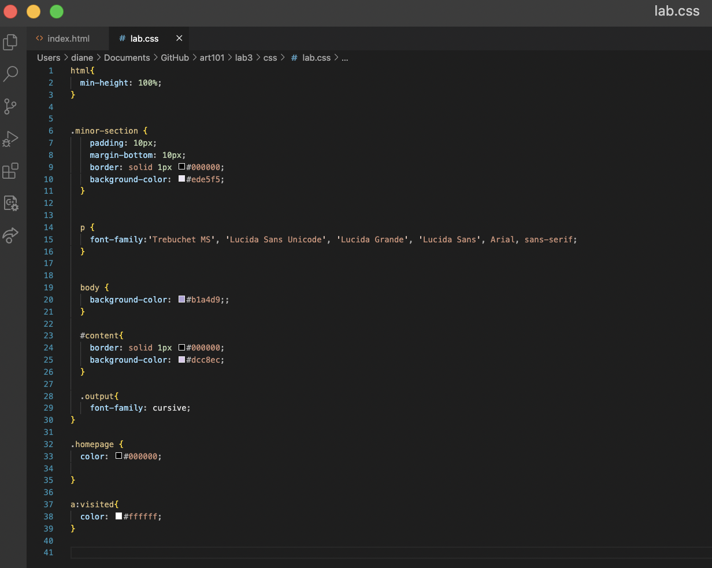
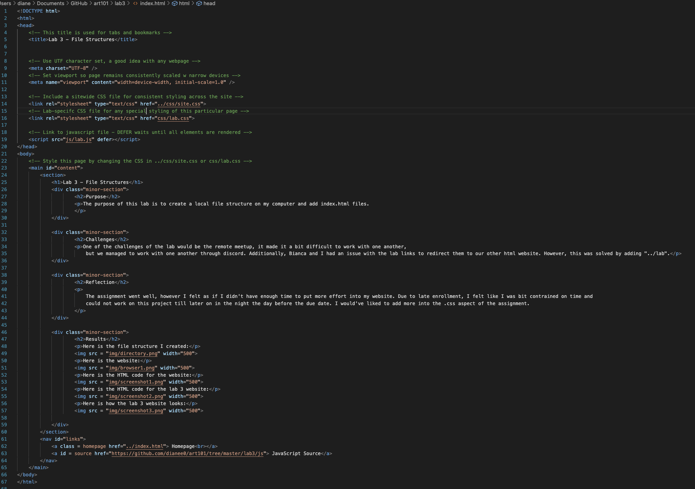
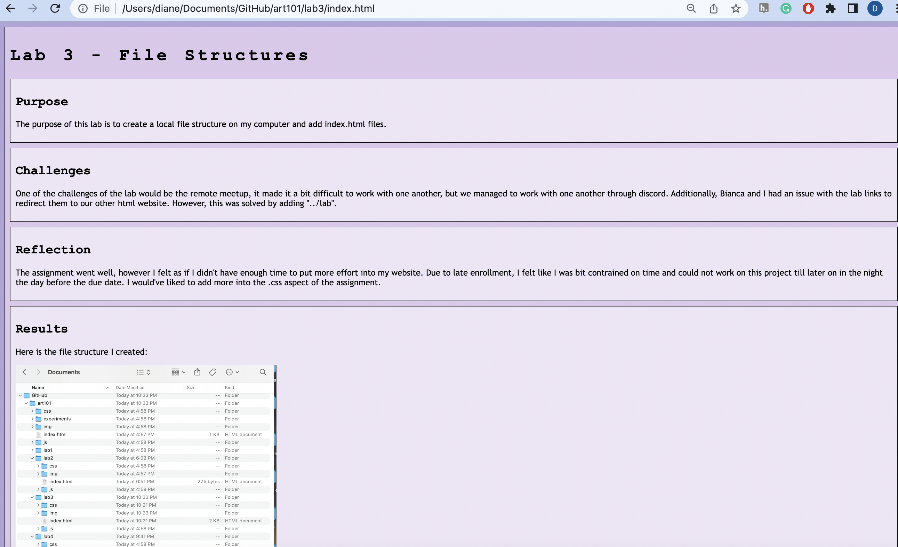
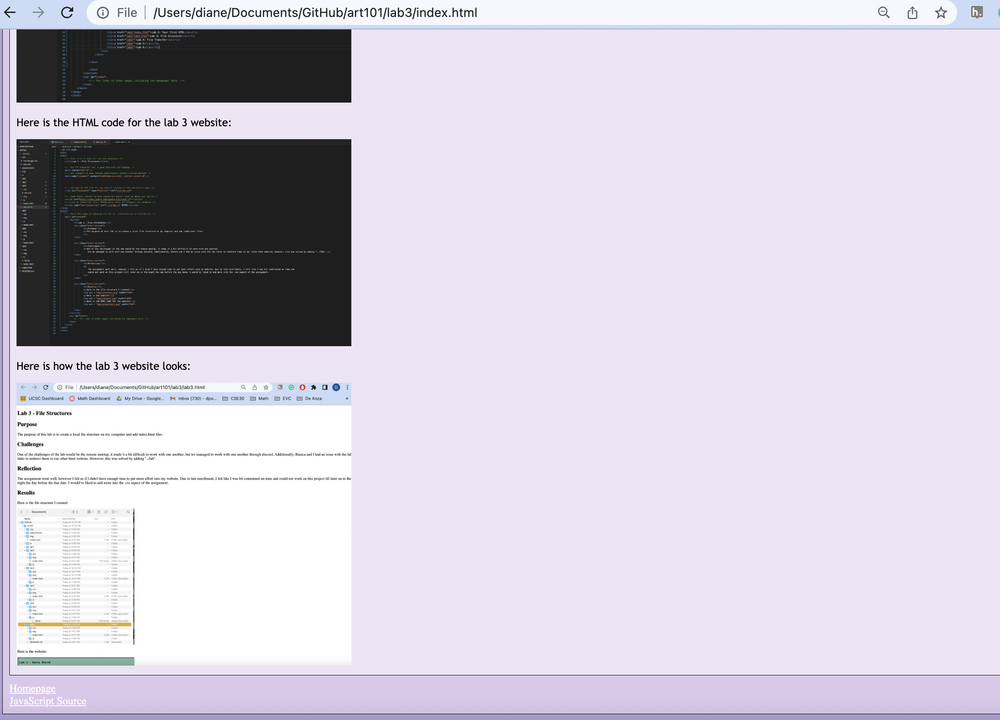

Lab 14: Debugging
Challenge
The purpose of this assignment is to debug old code in previous labs.
Problems
Christina and I didn't have many issues with any of our labs. I personally had to fix my lab 3 CSS because I had not added any because I needed to fix it. However, I was able to debug any unworking code and added a bunch of CSS code to make my website look cleaner. Christina did the same and went back and fixed any CSS issues. For javascript, we did not have any debugging errors.
Results
I mainly fixed the CSS on lab 3 because I orginally didn't feel good about how my end result looked. I didn't have many issues with any of my JavaScript from previous labs so I didn't really need to fix anything else other than lab 3. Additionally, I previously fixed this lab because it was messed up, but wasn't able to get to fixing up the CSS code.
Debugging
This is my CSS file:
This is my index.html file. I added a link to javascript source and added a CSS style sheet to the webpage:
This is what my finalized website looks like after the changes:
 